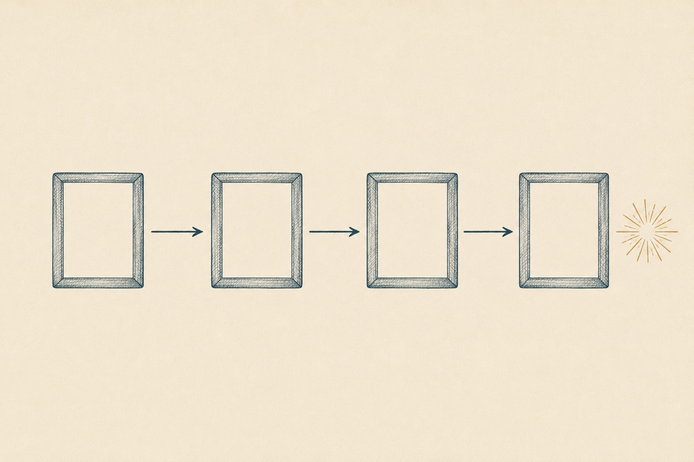

Как выстроить логику программы: концепт-история, модель TOTE, три позиции описания и лестница навыков — от простых к комплексным.
Хорошо, скажете вы, история — это красиво. Но как превратить историю из пересказа в образовательный процесс? Для этого нам нужен инструмент. И в качестве такого инструмента мы используем модель TOTE (произносится как «тОут»), которую в 1960 году описали психологи Карл Прибрам, Джон Миллер и Юджин Галантер1. Модель TOTE (или T.O.T.E.) описывает петлю обратной связи, лежащую в основе человеческого (и не только) поведения. Как ты, вероятно, догадался, название TOTE — это аббревиатура, и расшифровывается она следующим образом:
Test 1 (Тест 1) → Operation (Операция) → Test 2 (Тест 2) → Exit (Выход).
Как многие модели в фундаментальной науке, TOTE применима к описанию и анализу самого широкого спектра вариантов поведения (не только человеческого, но и животного), и чтобы не утонуть в абстракциях, я предлагаю разбирать значение каждого шага сразу же на примере процесса обучения.
Возьмём крупный план (макро-уровень структуры обучения). По сути — всё прохождение студентом нашей программы — это и есть один большой TOTE, в котором:

Студент приходит на программу, не умея делать самопрезентацию. Он фиксирует для себя несоответствие между тем, какого качества его самопрезентация прямо сейчас и тем, какого качества он хочет достичь. Фактически, T1 — это точка фиксации цели и принятия решения начинать действовать.
На макро-уровне — все действия студента в рамках обучения, направленные на достижение цели; то есть — на приобретение навыка делать самопрезентацию.
Проверка: соответствует ли теперь достигнутое состояние тому, которое было запланировано? «Получилось — не получилось?» Именно здесь проявляется важность наличия критериев результата, потому что именно по этим критериям и происходит сверка.
То есть: если цель была — освоить самопрезентацию в формате «лифт» по одному шаблону, наизусть и без запинок, то ровно по этим критериям необходимо и проводить сравнение ожидаемого и полученного2.
При хорошем раскладе, Exit — это точка, когда мы фиксируем успешное достижение результата, ставим точку в обучении, поздравляем друг друга, выдаём дипломы или сертификаты, празднуем.
Менее приятный вариант: студент может обнаружить, например, что поставленная цель для него не стоит вкладываемых усилий, махнуть рукой и закрыть для себя обучение на программе.
Надеюсь, что на макро-уровне с TOTE всё ясно. Она достаточно легко накладывается на чей-угодно личный опыт, поскольку отражает глубинную структуру абсолютно любого поведения. На TOTE можно разложить решение абсолютно любых жизненных задач: от чистки зубов по утрам и похудения до переезда в другую страну.
1 Впервые модель была описана в книге «Программы и структура поведения: подробное описание модели T — O — T — E».
2 Это очень тонкий и важный момент: когда мы дойдём до работы с мотивацией и сложным поведением участников, мы увидим, какую колоссальную роль играет критериальная ясность описания целей/ожидаемых результатов обучения и процесс сверки Т1 и Т2 в управлении состоянием, вовлечённостью и эмоциями студентов.
Что мы делаем дальше: наведём резкость и посмотрим на одну из «глав» в концепте того же курса по самопрезентации. Внутри неё живёт свой, малый TOTE.
Тема 1, в которой мы выясняем цель и смысл самопрезентации.
Вуаля! Надеюсь, теперь ты видишь, что TOTE — масштабируемая модель, которая может описывать как весь твой курс целиком, так и отдельный маленький цикл обучения; более того — вся программа целиком представляет собой не что иное, как последовательность «тоутов». Из них, как из кирпичиков, мы и будем собирать «здание» твоего будущего курса.
По роду тренерской деятельности я не раз проводил стратегические сессии для бизнес-команд. И часто одной из самых болезненных тем было истощение или даже выгорание ключевых сотрудников. Я начинал разбираться, расспрашивать о том, как устроены рабочие процессы…
И вскоре выяснялось, что команда уже больше 1,5 лет фигачит по-чёрному, добилась уже многих побед… и за всё это время ни разу не провела ни одного корпоратива. «Ещё чего! — говорил лидер, — Рано расслабляться! Это ещё не те результаты, которые стоило бы отмечать!» Знакомый сюжет, верно? У многих из нас были родители и учителя, рассуждавшие именно так. И вроде бы — такой героический подход, так много в нём привлекательной самоотверженности, готовности гореть своим делом…
Да-да. Сначала гореть, а потом выгореть до чёрных углей. Почему?
Давай присмотримся внимательно к решению бизнес-задач через призму модели TOTE. Вот, скажем, открылся один важный TOTE — когда нам нужно привлечь инвестиции. Привлекли. Казалось бы — можно TOTE закрыть: отметить, зафиксировать успех, поздравить друг друга… Но нет, говорит лидер команды, нельзя расслабляться, теперь нам нужно запустить продукт А. Окей, говорит команда, запускаем продукт А… И это следующий TOTE. Запустили. Ну? Теперь-то отметим? Молодцы же? Нет, хмурится лидер, рано радоваться, нужно выйти на новый рынок! Окееей, говорит команда уже кряхтя, бежим дальше, выходим на новый рынок… Но теперь-то…? Нет, краснеет от напряжения лидер, нужно повышать показатели продаж… И новый TOTE. И снова команда впрягается и бежит к новой цели…
И поскольку весь рабочий процесс превращается в сплошную цепочку незакрытых TOTE, выгорание ключевых сотрудников или всей команды целиком — это вопрос не «если», а «когда».
Почему? Потому что живая система не может существовать в режиме непрерывной мобилизации. Ей нужно в какой-то момент разгружаться, фиксировать точку финала, причём, желательно — финала успешного3.
Так вот, ценность корпоратива заключается ровно в том, что это и есть шаг Exit. В этот момент система понимает: задача решена успешно! Ура, цель достигнута! Мы выдыхаем, сбрасываем накопленное напряжение, обмениваемся обратной связью, поздравляем себя и друг друга, восполняем энергозатраты, говорим друг другу о том, какие мы крутые и как мы друг друга ценим. Именно здесь мы набираем ресурсы для решения новой задачи, для марш-броска к новой цели.
Шаг Exit обеспечивает закрытие одного TOTE и переход к следующему, он необходим для здорового развития как бизнес-систем, так и систем образовательных.
Поэтому, пожалуйста, имей в виду, что каждый TOTE твоей программы непременно должен заканчиваться «Exit-ом», на котором студент получит обратную связь, зафиксирует достигнутый успех, обопрётся на него обеими ногами и приготовится сделать следующий шаг4.
3 Но даже если и не очень успешного — помнишь древнюю шутку «лучше ужасный конец, чем ужас без конца». Она ровно про TOTE без Exit-а.
4 Мы ещё обязательно коснёмся важности Exit, когда будем обсуждать тему мотивации студентов и управление ею.